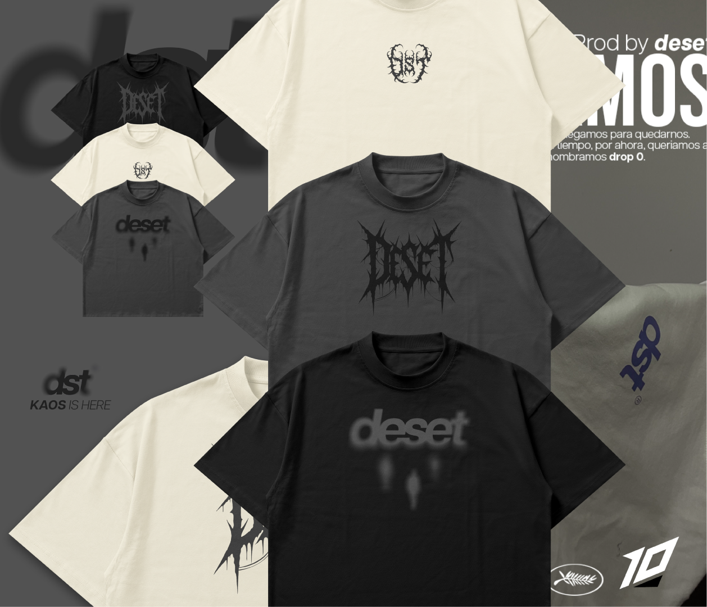

EL CONCEPTO
DESET es una marca de indumentaria streetwear creada con el objetivo de desarrollar una identidad versátil, contemporánea y adaptable a diferentes conceptos, colecciones y contextos de aplicación. El proyecto busca alejarse de una única temática o estética cerrada, permitiendo que cada lanzamiento pueda explorar nuevas ideas sin perder coherencia de marca.
LA SOLUCIÓN
Para lograrlo, se trabajó en la optimización del logotipo mediante una construcción tipográfica simple, sólida y altamente reconocible. Su diseño prioriza la legibilidad, la reproducción en distintos soportes y la capacidad de convivir con múltiples recursos gráficos, convirtiéndose en una firma visual flexible capaz de adaptarse a cualquier estampa, colección o universo creativo sin perder identidad.